Killian Hoyez / Projet 002
Maquette d'infrastructure virtualisée.
Déploiement d'une maquette de six machines virtuelles sous VirtualBox sur un réseau NAT isolé. Le projet comprend un domaine Active Directory avec GPO et l'installation de GLPI 11 sur Debian 13.
Un environnement complet
De l'installation
à la gestion.
La maquette reproduit un environnement d'entreprise isolé pour tester les systèmes, les services réseau et la gestion du support informatique.
Technologies : VirtualBox, Windows 11 Pro, Windows Server 2025, Active Directory (AD DS, DNS), GPO, Ubuntu, Linux Mint, Kali Linux, Debian 13, Apache2, MariaDB, PHP 8.4-FPM, GLPI 11 et nmap.
Étape 1
Les systèmes
sous VirtualBox.
Création du réseau NAT RN-TPOS, installation des systèmes et validation de la connectivité.
Objectif. Je voulais construire un environnement isolé capable d'accueillir les six machines virtuelles du TP. L'objectif était de pouvoir installer plusieurs systèmes, les faire communiquer et conserver un accès contrôlé à Internet.
Actions réalisées
Créer le réseau NAT RN-TPOS
J'ai créé un réseau NAT nommé RN-TPOS avec le plan 10.0.2.0/24 et le DHCP activé. Toutes les VM partagent ainsi un réseau commun isolé, tout en conservant un accès à Internet pour les mises à jour.
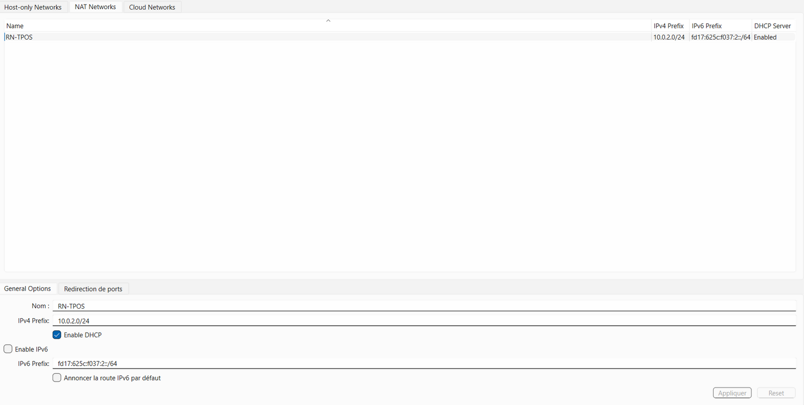
Réseau NAT RN-TPOS et paramètres DHCP. Installer Windows 11 Pro
J'ai sélectionné Windows 11 Pro et préparé la VM avec UEFI, Secure Boot et TPM 2.0. Ces prérequis sont nécessaires pour respecter les exigences de sécurité et d'installation du système.
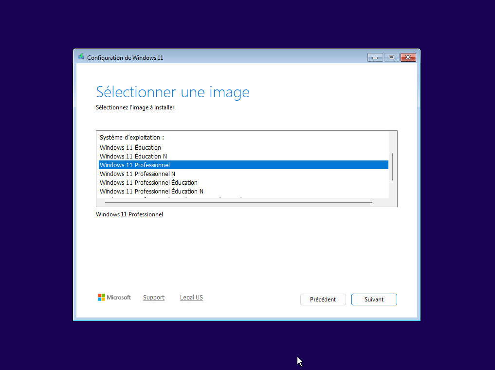
Sélection de l'édition Windows 11 Pro. Configurer le matériel virtuel
J'ai activé l'UEFI, le Secure Boot et le TPM 2.0 dans les paramètres de la machine. Cette configuration permet à Windows 11 de vérifier les composants attendus au démarrage.
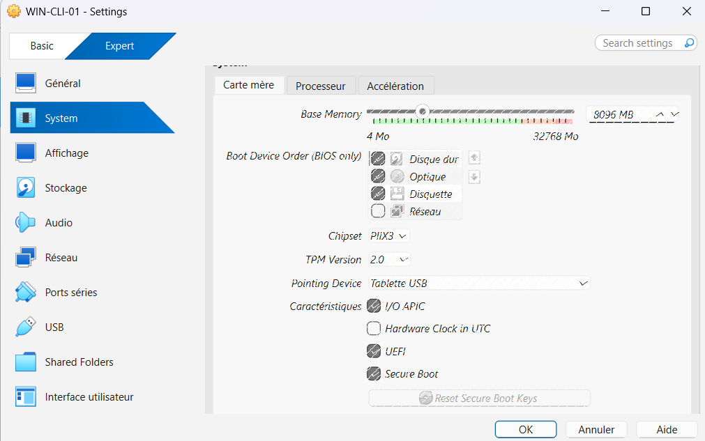
Paramètres UEFI, Secure Boot et TPM 2.0. Préparer et cloner le poste
J'ai lancé Sysprep avec OOBE, Généraliser et Arrêter, puis réalisé un clone intégral de WIN-CLI-02. VirtualBox génère une nouvelle adresse MAC ; le SID doit aussi être unique pour éviter les conflits dans le domaine AD, les GPO et WSUS.
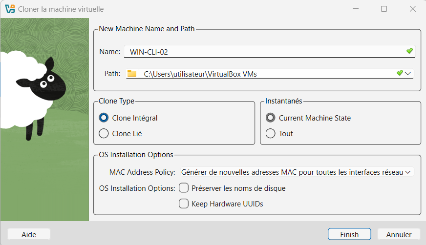
Clone intégral après Sysprep et génération d'une nouvelle MAC. Installer les autres systèmes
J'ai installé Windows Server 2025, Ubuntu Desktop, Linux Mint et Kali Linux. Ubuntu a servi aux essais SSH et Mint aux tests de restauration avec Timeshift, afin de couvrir plusieurs usages d'administration.
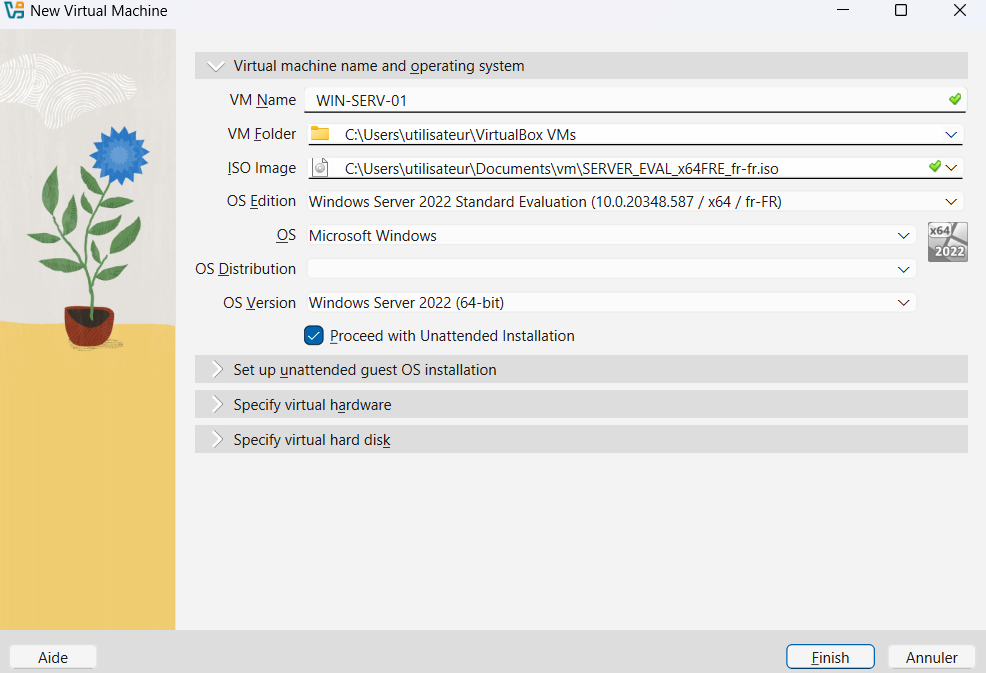
Création de la VM serveur WIN-SRV-01. Tester la connectivité
J'ai testé les pings entre VM, vers 8.8.8.8 et vers www.debian.org. Une réponse de 8.8.8.8 sans résolution du nom indique un problème DNS ; si les deux tests échouent, la passerelle est à vérifier.
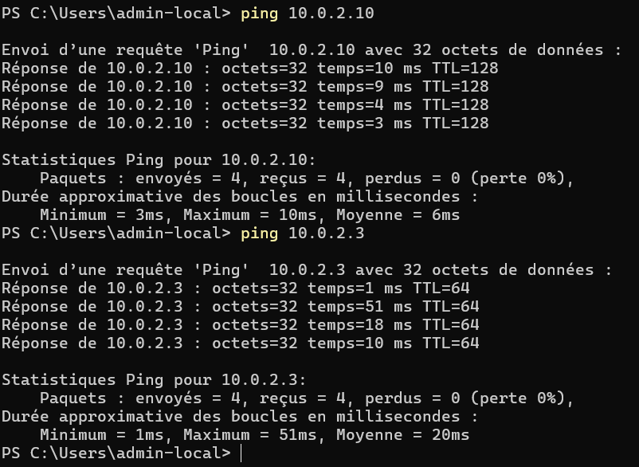
Tests de connectivité entre les VM. Autoriser le ping entrant
Le pare-feu de Windows 11 bloque le ping entrant par défaut. J'ai activé la règle ICMPv4 « Partage de fichiers et d'imprimantes (Demande d'écho) » pour permettre le diagnostic depuis les autres VM.
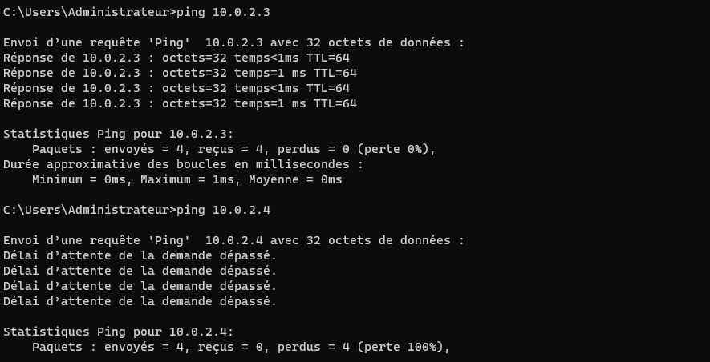
Le ping entrant est bloqué avant l'activation de la règle ICMPv4. Découvrir les hôtes avec nmap
Depuis Kali, j'ai exécuté nmap -sn 10.0.2.0/24 uniquement sur le réseau du TP. La découverte ARP peut identifier un poste Windows même lorsque son ping est bloqué ; cette pratique reste limitée à un réseau autorisé, conformément à l'article 323-1 du Code pénal.
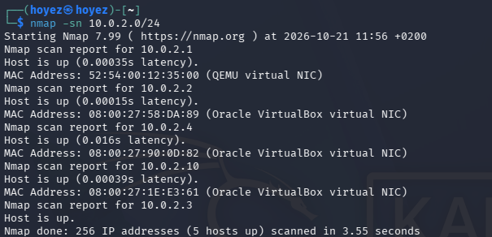
Scan nmap -sn limité au réseau 10.0.2.0/24. Valider un instantané
J'ai créé l'instantané « 01-Installation-OK », ajouté un fichier test.txt, puis restauré l'instantané. La disparition du fichier confirme que le retour à l'état sauvegardé fonctionne.
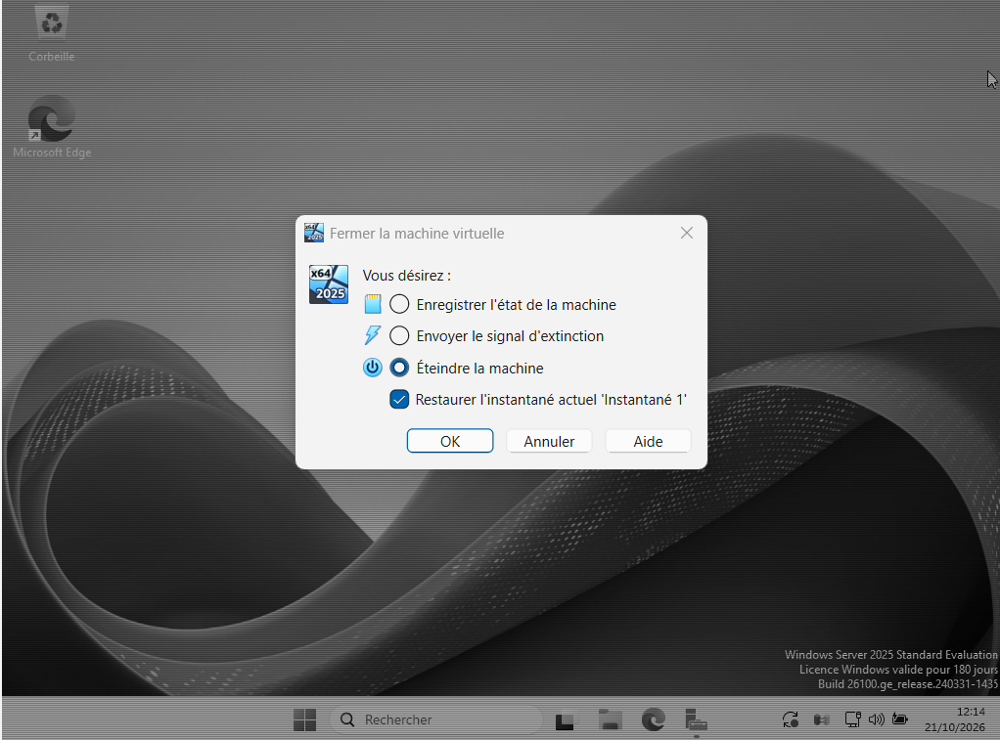
Test de restauration de l'instantané « 01-Installation-OK ».
Étape 2
Active Directory
et GPO.
Déploiement du domaine, jonction des clients et application des stratégies de groupe.
Objectif. Je voulais centraliser l'identité, le DNS et l'administration des postes Windows. Le domaine devait aussi appliquer des règles communes grâce aux stratégies de groupe.
Actions réalisées
Préparer le serveur DNS
J'ai configuré WIN-SRV-01 avec l'adresse fixe 10.0.2.10 et son propre DNS. Cette résolution locale est indispensable avant l'installation d'AD DS.
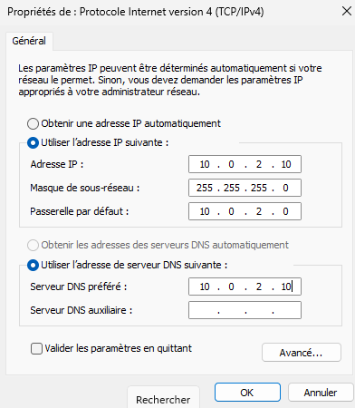
Adresse fixe 10.0.2.10 et DNS du serveur. Installer le rôle AD DS
J'ai installé le rôle AD DS depuis le Gestionnaire de serveur. Cette étape ajoute les composants nécessaires pour transformer le serveur en contrôleur de domaine.
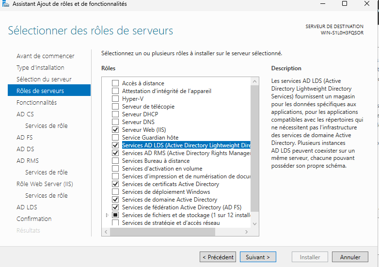
Installation du rôle AD DS. Promouvoir le contrôleur de domaine
J'ai créé une nouvelle forêt avec le domaine domaine.local. La promotion fournit l'annuaire, le DNS intégré et le cadre d'authentification des clients.
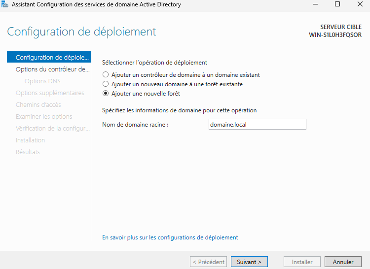
Création de la nouvelle forêt domaine.local. Organiser l'annuaire
J'ai créé les OU « Utilisateurs » et « Ordinateurs », puis un utilisateur de test. Cette organisation permet de cibler les stratégies et de séparer les objets administrés.
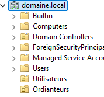
Organisation des OU dans Active Directory. Joindre les clients au domaine
J'ai configuré le DNS des clients Windows 11 sur 10.0.2.10 avant de les joindre au domaine. Sans ce DNS, le nom domaine.local ne peut pas être trouvé.
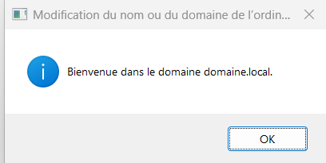
Confirmation de la jonction au domaine. Déployer le fond d'écran
J'ai partagé le dossier de fonds en lecture sur le serveur, puis créé une GPO liée à l'OU « Utilisateurs ». Le paramètre concerne l'utilisateur, donc le lien doit cibler cette OU.
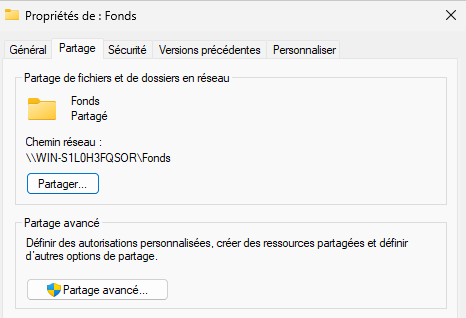
Partage réseau du dossier de fonds. Vérifier l'application de la GPO
J'ai contrôlé le lien de la GPO et son résultat sur un poste client. Le fond d'écran appliqué confirme que le partage et le ciblage utilisateur fonctionnent.
Résultat visible sur le poste client. Renforcer la politique de mot de passe
J'ai défini 12 caractères minimum, la complexité, une durée maximale de 90 jours et un historique de 24 mots de passe. La GPO est liée à la racine du domaine et placée avant la Default Domain Policy ; sinon ses paramètres ne sont pas appliqués.
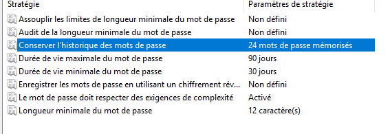
Paramètres de la politique de mot de passe.
Étape 3
GLPI 11
sur Debian 13.
Installation de la plateforme et mise en pratique de la gestion des tickets.
Objectif. Je voulais déployer une solution libre de gestion de parc et de support sur Debian 13. GLPI devait permettre de suivre un ticket de sa création à sa clôture et d'exploiter les données produites.
Actions réalisées
Installer la pile serveur
J'ai installé Apache2, MariaDB et PHP 8.4-FPM avec les extensions requises par GLPI. J'ai ensuite sécurisé MariaDB, créé une base et un utilisateur dédiés, puis chargé les fuseaux horaires pour garantir des dates cohérentes.
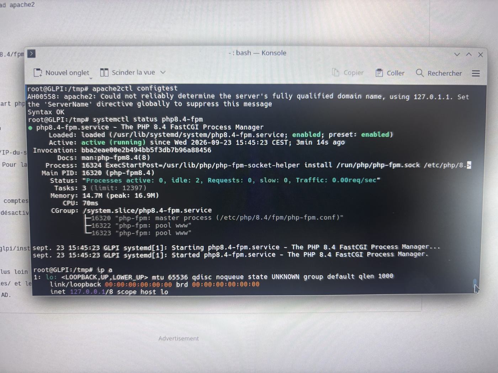
Services Apache2 et PHP-FPM opérationnels. Corriger le prérequis PHP
J'ai réglé session.cookie_httponly = on dans PHP. Sans ce réglage, le contrôle des prérequis de GLPI affiche une erreur bloquante liée à la protection de session.
Contrôle de la configuration PHP avant l'installation de GLPI. Publier GLPI depuis l'hôte
J'ai configuré le VirtualHost Apache et une redirection de port VirtualBox de l'hôte 8080 vers le port 80 de la VM. Cette redirection est nécessaire car le NAT empêche l'hôte de joindre directement l'adresse privée de l'invité.
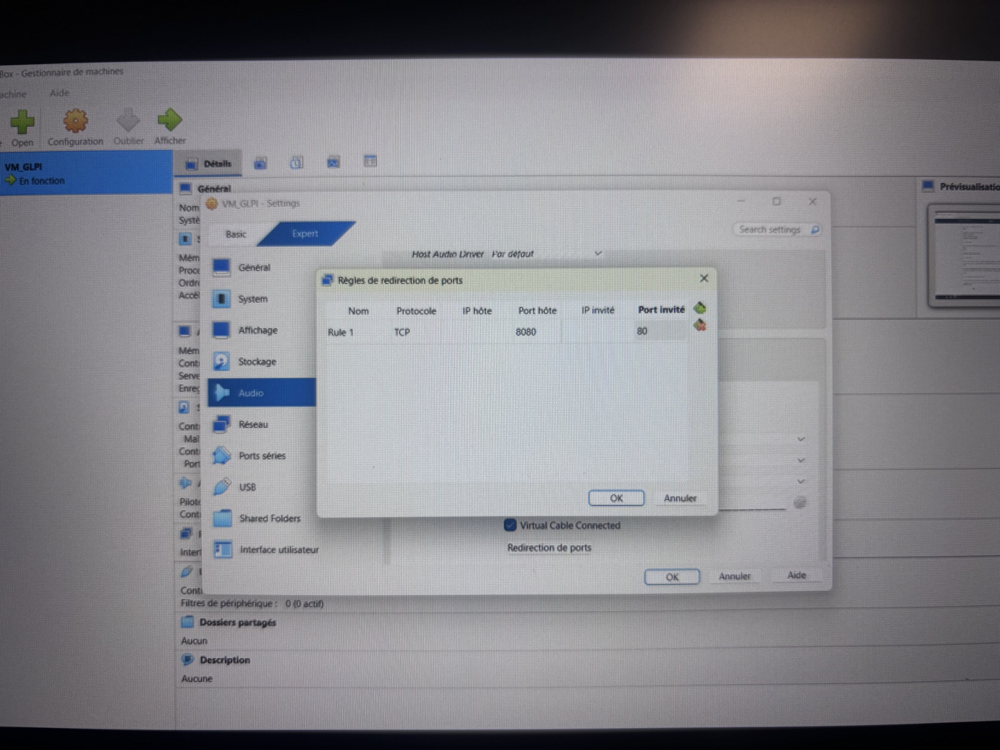
Redirection hôte 8080 vers invité 80. Gérer le cycle des tickets
J'ai créé des tickets, défini leur urgence et leur impact, puis observé le calcul de la priorité. Le cycle suivi comprend Nouveau, En cours, En attente, Résolu et Clos ; la base de connaissances et les statistiques complètent le suivi.

Paramétrage d'un ticket GLPI. Traiter et clôturer les demandes
J'ai attribué un ticket, ajouté une réponse, appliqué une solution puis clôturé la demande. Cette séquence montre la traçabilité du support et la distinction entre résolution technique et clôture administrative.
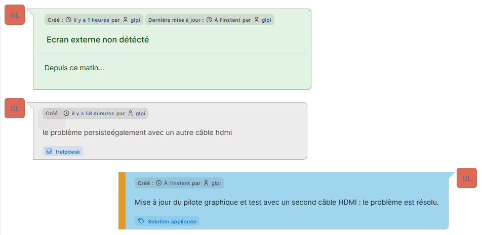
Résolution et suivi des échanges du ticket. Analyser l'activité
J'ai consulté la liste des tickets, le tableau de bord et les statistiques. Ces vues permettent de suivre les volumes, les statuts et les délais de traitement.

Statistiques de tickets et de délais.
Corrections apportées
Une documentation
fiable.
Une relecture a permis de corriger les incohérences avant publication.
Lors de la rédaction, j'ai repéré puis corrigé plusieurs incohérences : la plage 192.168.50.0/24 indiquée au début alors que le réseau réel est 10.0.2.0/24, la passerelle du serveur qui doit être 10.0.2.1 et non 10.0.2.0, ainsi que la version de Windows Server. Cette vérification renforce la rigueur et la fiabilité de la documentation.